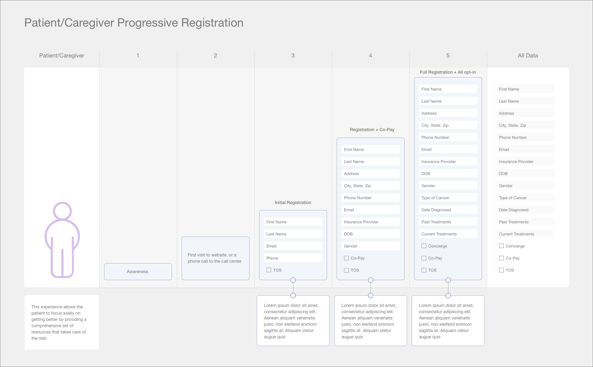

In 2017, a national pharmaceutical company launched a new support program for patients using their oncology treatments. Patients would be paired with dedicated counselors, who would assist them over the phone with finding resources for financial assistance, emotional support and other day-to-day challenges of having cancer, such as finding transportation or lodging when receiving out of town treatment.
Patients and Purpose was tasked with creating a website for the program that would educate patients, caregivers and healthcare professionals and provide multiple ways to simply and quickly sign up for the program.
Role
- Developed persona flows and customer touchpoints, identifying our users and determining how they would be reaching our site.
- Created sitemaps and wireframes for separate patient and healthcare provider experiences
- Outlined an approach for a progressive registration system
- Researched and designed approaches for integrating chatbots into the site, specifically for user registration purposes.
UX Challenges
Initially, the client saw user registration as an all or nothing proposition. If patients wanted access to any of program’s features, from light features like informational e-mails, all the way to access to a personal telephone concierge, they would need to fill out a lengthy form that required not only personal contact information, but also specific information about their cancer diagnosis and treatment. We realized quickly that this would be a heavy burden on the user and greatly decrease the chances that they would sign-up.
In response, we created a progressive registration system, where users would be able to engage with the program at the level that they wanted and only have to provide an appropriate amount of information. There were three levels;

Diagram of the steps of progressive registration, showing the amount of personal information that a user would have to provide for each level of the program.
Users could join at any level at any time. If they wanted to increase their engagement with the program, they would pick-up the registration process from where they left it and not have to re-enter any data, only updating their profile with the necessary information.